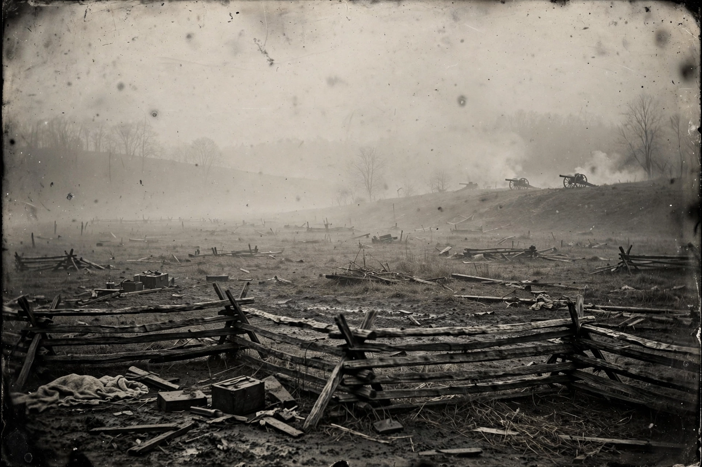

American Civil War
| Date | April 12, 1861 – April 9, 1865 |
|---|---|
| Location | United States (mainly the South) |
| Result | Union victory; slavery abolished; Confederacy dissolved |
| Deaths | 620,000–750,000 (estimates vary) |

[Image: a battlefield photograph from the Civil War era — a field with fallen soldiers after the Battle of Gettysburg (famous Gardner image, described from memory)]The American Civil War (April 12, 1861 – April 9, 1865) was a civil war in the United States between the Union (the North) and the Confederacy (the South), formed by states that seceded after the election of Abraham Lincoln. The central cause of the war was the dispute over slavery, particularly its expansion into western territories. It remains the deadliest war in American history.
Over four years, more than 600,000 soldiers died — the most commonly cited estimates now run higher — and much of the South's infrastructure was destroyed. The war ended with the Confederacy's surrender, slavery abolished nationwide by the Thirteenth Amendment, and a strengthened federal union.
Course of the war
War began when Confederate forces fired on Fort Sumter in Charleston Harbor. Early Confederate victories in the east under Robert E. Lee were balanced by Union successes in the west under Ulysses S. Grant, including the capture of Vicksburg. The Battle of Gettysburg (July 1863), fought simultaneously with Vicksburg's fall, was the war's great turning point in the east.
Lincoln's Emancipation Proclamation (1863) made abolition an explicit war aim and enabled the large-scale enlistment of Black soldiers; about 180,000 served in the Union Army. In 1864–65 Grant's Overland Campaign and Sherman's March to the Sea ground down Confederate resistance until Lee surrendered at Appomattox Court House on 9 April 1865.
Legacy
The war settled the questions of secession and slavery, and the Reconstruction Amendments — the Thirteenth, Fourteenth and Fifteenth — transformed American citizenship and civil rights law, even as Reconstruction itself was abandoned within a generation and Jim Crow segregation followed in the South.
Military historians note the war's character as an early industrial war: railroads, telegraphs, rifled weapons, ironclads and mass conscription all featured prominently, foreshadowing the First World War.